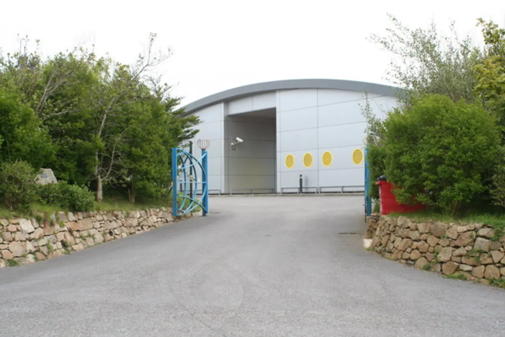

바다는 넓어도 입구는 좁습니다

데이터센터가 늘어나면 서버와 전력만 필요해지는 것이 아닙니다. 대륙과 대륙을 잇는 트래픽이 커지고, 그 트래픽은 결국 해저 케이블과 육양국을 지나갑니다. 지도에서는 선 하나로 보이지만 실제 산업에서는 바닷속 케이블, 해안 허가, 육상 광케이블, 전력, 보안 구역이 한 묶음으로 움직입니다.
해저 케이블 사업에서 병목은 종종 바다가 아니라 해안에서 생깁니다. 케이블이 올라오는 육양국 부지는 제한적이고, 지방정부 허가와 환경 심사가 필요합니다. 데이터센터와 가까운 곳에 연결돼야 지연 시간이 줄지만, 그 지역의 전력망과 토지 이용 계획이 맞지 않으면 공사는 밀립니다.
기업들은 더 많은 케이블을 원하지만 케이블을 깔 선박과 전문 인력은 갑자기 늘지 않습니다. 포설선 일정이 밀리면 완공 시점이 늦어지고, 수리선이 부족하면 장애 복구도 지연됩니다. 데이터센터 투자가 커질수록 물리 네트워크의 낡은 병목이 더 선명해지는 이유입니다.
노선은 지도보다 정치적입니다
해저 케이블 노선은 가장 짧은 길만 따라가지 않습니다. 해저 지형, 지진대, 어업 구역, 군사적 긴장, 항만 접근성, 상륙 국가의 규제까지 모두 반영됩니다. 특정 해협이나 좁은 바닷길에 트래픽이 몰리면 사고 하나가 여러 서비스에 영향을 줄 수 있습니다.
지정학적 리스크가 커질수록 기업은 우회 노선을 검토합니다. 짧은 길이 아니라 안전하고 복구 가능한 길을 택하는 것입니다. 이 선택은 비용을 올리고 공사 기간을 늘리지만, 클라우드와 금융, 통신 서비스는 끊김 비용이 더 큽니다. 해저 케이블은 통신 자산이면서 동시에 산업 안보 자산입니다.
특히 AI 데이터센터는 대용량 학습 데이터와 서비스 요청이 계속 오갑니다. 한 지역에 계산 능력이 집중되고 다른 지역 사용자가 접속하면 국제 회선 품질이 서비스 품질로 이어집니다. 케이블 노선의 다양성이 기업의 안정성과 직접 연결됩니다.
수리는 투자보다 느립니다
케이블은 한 번 깔면 끝나는 자산처럼 보이지만 실제로는 계속 관리해야 합니다. 닻, 어망, 지진, 해저 산사태, 장비 노후화가 장애를 만들 수 있습니다. 문제가 생기면 위치를 찾고, 수리선을 보내고, 바닷속 케이블을 끌어올려 접속해야 합니다. 이 과정은 날씨와 선박 일정에 크게 좌우됩니다.
수리 역량이 부족하면 중복 회선이 있어도 부담이 커집니다. 트래픽을 다른 노선으로 돌릴 수는 있지만, 우회 경로가 길어지면 지연 시간이 늘고 혼잡이 생깁니다. 금융 거래, 게임, 화상회의, 클라우드 업무는 작은 지연에도 민감합니다. 그래서 케이블 투자는 신규 노선뿐 아니라 복구 체계까지 함께 봐야 합니다.
보험료와 보안 비용도 무시하기 어렵습니다. 고위험 해역을 지나는 케이블은 감시와 유지 비용이 커지고, 장애가 반복되면 계약 조건이 바뀝니다. 투자자는 총연장보다 복구 시간과 우회 설계를 함께 비교해야 합니다.
데이터 수요만으로 부족합니다
해저 케이블 관련 기업을 볼 때 데이터 사용량 증가만으로 판단하면 놓치는 부분이 생깁니다. 케이블 제조, 포설선, 해양 공사, 광전송 장비, 육양국 운영, 보안 서비스가 서로 다른 수익 구조를 가집니다. 어떤 회사는 장기 계약으로 안정적이고, 어떤 회사는 프로젝트 수주에 따라 실적이 크게 흔들립니다.
확인할 숫자는 수주잔고, 선박 가동률, 프로젝트 지연 비용, 케이블 단가, 유지보수 계약 비중입니다. 데이터센터 투자 발표가 많아도 실제 해저망 매출은 허가와 공사 일정 뒤에 따라옵니다. 매출 인식이 늦어지는 산업이라는 점을 이해해야 기대와 실적의 간극을 줄일 수 있습니다.
결국 해저 케이블 투자의 핵심은 데이터센터의 성장 스토리를 물리 인프라 시간표로 번역하는 일입니다. 전력망, 선박, 해안 허가, 복구 능력이 같이 따라올 때 트래픽 증가는 매출과 현금흐름으로 바뀝니다.
관련 영상
엔비디아 칩 수만 개 시대, 해저케이블 병목 해설
AI와 클라우드는 화면 안에서 빠르게 움직이지만, 해저 케이블은 바다와 항만과 허가의 속도로 움직입니다. 데이터 수요가 분명해도 실제 병목은 선박 일정과 육양국에서 생길 수 있습니다. 이 산업은 성장률보다 완공 가능성과 복구 능력을 먼저 보는 편이 현실적입니다.
해저 케이블 투자는 데이터센터보다 선박과 육양국 병목을 먼저 봐야 합니다을 볼 때는 발표 직후의 반응보다 다음 분기까지 이어지는 숫자를 함께 확인하는 편이 좋습니다. 단기 뉴스는 방향을 빠르게 바꾸지만 실제 변화는 계약, 예산, 생산, 소비 습관처럼 느린 항목에서 굳어집니다. 이 차이를 나누어 보면 과장된 기대와 실제 지속 가능성을 구분할 수 있습니다.
가장 실용적인 점검 방법은 한 가지 지표에 기대지 않는 것입니다. 가격, 수요, 비용, 규제, 실행 시간이 같은 방향으로 움직이는지 확인해야 합니다. 어느 하나만 좋아도 나머지가 따라오지 않으면 결과는 늦어지고, 여러 조건이 동시에 맞으면 변화는 예상보다 빠르게 확산될 수 있습니다.
이 주제는 한 번의 결론보다 관찰 순서가 더 중요합니다. 먼저 현재 병목을 확인하고, 그다음 누가 비용을 부담하는지 보며, 마지막으로 그 부담이 가격이나 행동 변화로 이어지는지 봐야 합니다. 그렇게 읽으면 제목보다 구조가 먼저 보입니다.
해저 케이블 투자는 데이터센터보다 선박과 육양국 병목을 먼저 봐야 합니다을 볼 때는 발표 직후의 반응보다 다음 분기까지 이어지는 숫자를 함께 확인하는 편이 좋습니다. 단기 뉴스는 방향을 빠르게 바꾸지만 실제 변화는 계약, 예산, 생산, 소비 습관처럼 느린 항목에서 굳어집니다. 이 차이를 나누어 보면 과장된 기대와 실제 지속 가능성을 구분할 수 있습니다.
가장 실용적인 점검 방법은 한 가지 지표에 기대지 않는 것입니다. 가격, 수요, 비용, 규제, 실행 시간이 같은 방향으로 움직이는지 확인해야 합니다. 어느 하나만 좋아도 나머지가 따라오지 않으면 결과는 늦어지고, 여러 조건이 동시에 맞으면 변화는 예상보다 빠르게 확산될 수 있습니다.
이 주제는 한 번의 결론보다 관찰 순서가 더 중요합니다. 먼저 현재 병목을 확인하고, 그다음 누가 비용을 부담하는지 보며, 마지막으로 그 부담이 가격이나 행동 변화로 이어지는지 봐야 합니다. 그렇게 읽으면 제목보다 구조가 먼저 보입니다.
해저 케이블 투자는 데이터센터보다 선박과 육양국 병목을 먼저 봐야 합니다을 볼 때는 발표 직후의 반응보다 다음 분기까지 이어지는 숫자를 함께 확인하는 편이 좋습니다. 단기 뉴스는 방향을 빠르게 바꾸지만 실제 변화는 계약, 예산, 생산, 소비 습관처럼 느린 항목에서 굳어집니다. 이 차이를 나누어 보면 과장된 기대와 실제 지속 가능성을 구분할 수 있습니다.